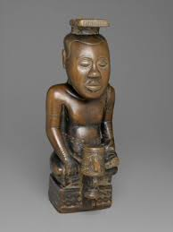

171. Ndop (portrait figure) of King Mishe miShyaang maMbul. Kuba peoples (Democratic Republic of the Congo). c. 1760–1780 C.E. Wood.
- Form
- Characteristics of a ndop
- Cross-legged pose
- Sits on a base
- Epicene body
- Face seems uninvolved, about mortal affairs
- A peace knife in his left hand
- Function
- Ndop sculptures are commemorative portraits of Kuba rulers, presented in a ideal state
- Not an actual representation of a deceased king but of his spirit
- Made after the death of the king
- Context
- Each king is commemorated by symbols on the base of the figure; this king has a sword in his left hand in a nonaggressive pose, handle facing out
- One of the earliest existing African wood sculptures; oldest ndop existence
- Rubbed with oil to protect it from insects
- Acted as a surrogate for the king in his absence
- Kept in the kingś shrine with other works called a set of “royal charms”